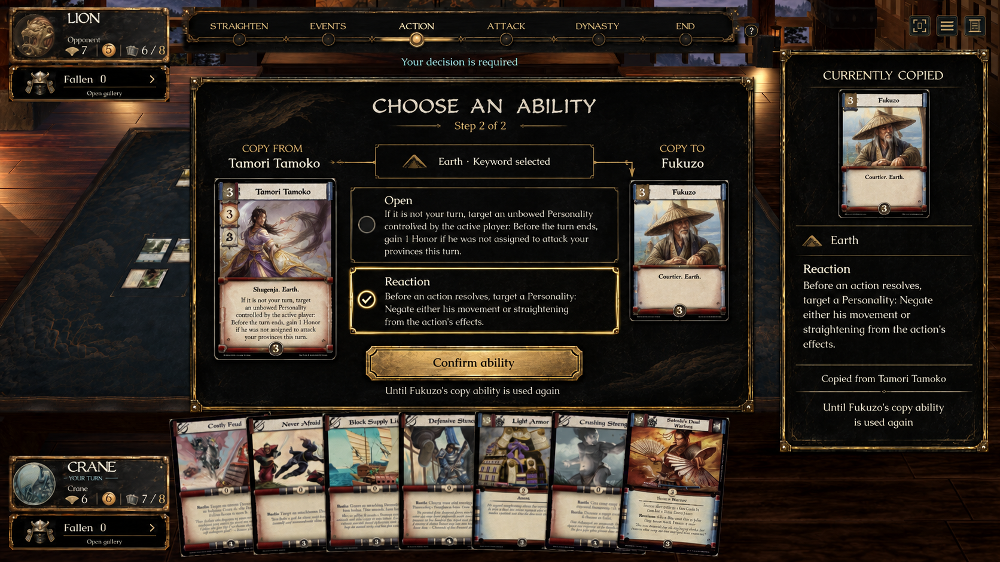
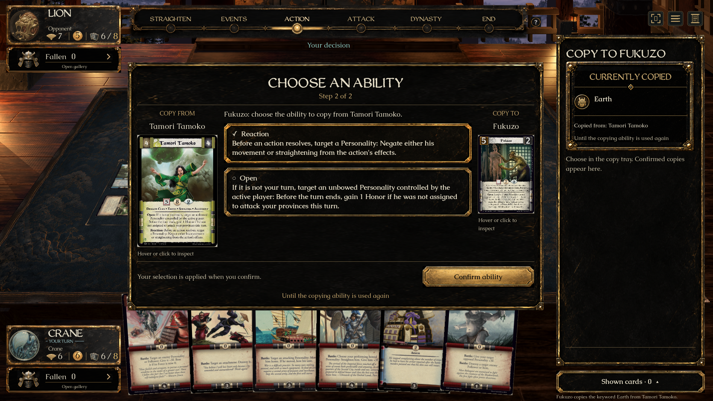
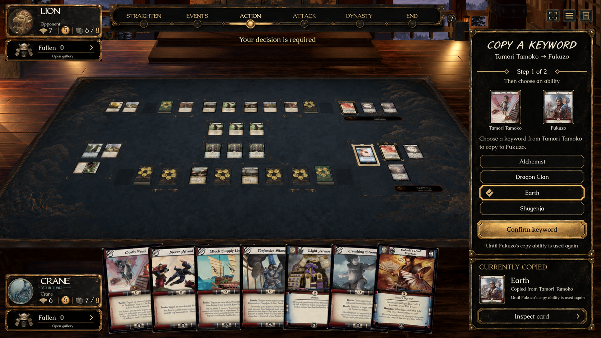
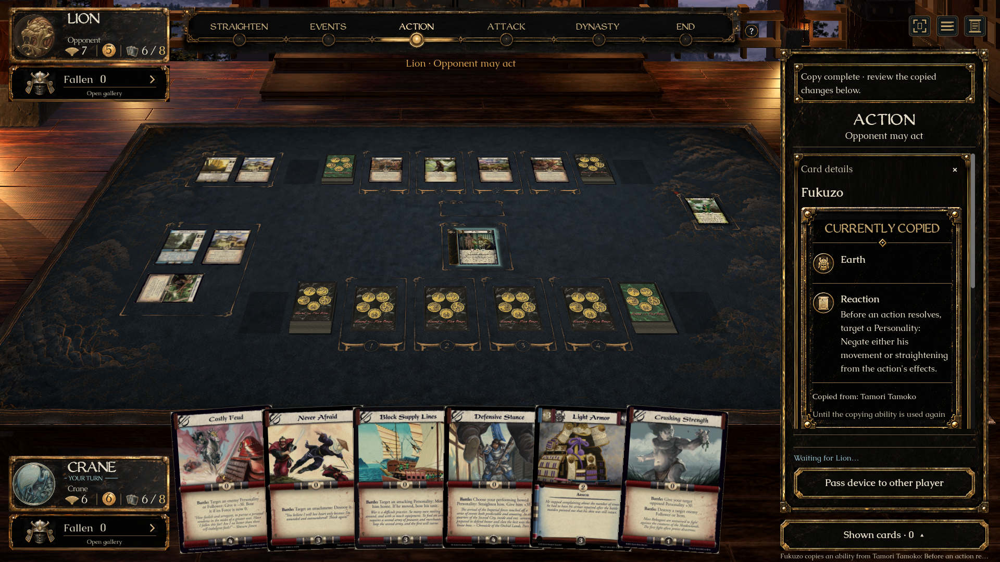

Approved concepts beside the native renderer at the same displayed width. The game retains full period scans, its existing lacquer artwork and Caudex/WeatheredQuill typography.




This is the approved combination adapted to live game state, not identical whole-screen pixels. Illustrative card faces and fictional values in the concept are replaced by the actual selected printing and engine-provided text. The inherited card-changes artwork is shared with permanent grants.